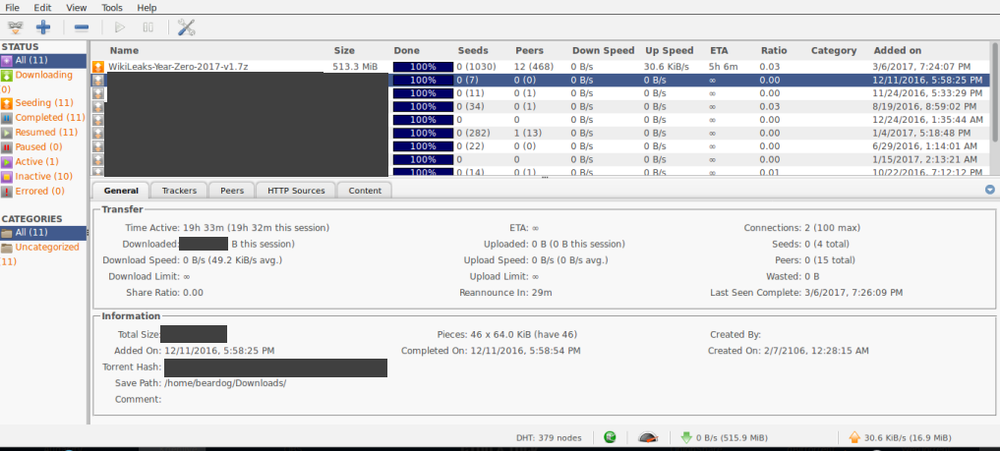

Pwning Qbittorrent With XSS
Introduction
qBittorrent and uTorrent are both popular torrent clients with fairly similar features. For example, both have an included web interface.
This post will focus on qBittorrent, since it is open source & has fixed the issues mentioned below.

Web exploits in native software
qBittorrent and uTorrent both have optional web management interfaces, which can be used to remotely control ones torrent client.
Similar to I2P, these client's interfaces failed to implement traditional protections against browser based attacks, such as XSS.
Non escaped values
Most of the user/3rd party supplied fields in qBittorent's web UI were not escaped, meaning arbitrary HTML could be embedded into the user's client when rendering the page.
In the case of qBittorrent, some of the non-escaped values included:
- Torrent names
- File names
- Peer names
- Tracker URLs
Peer names are especially a threat, as they can be arbitrarily set by malicious peers, even on legitimate torrents.
XSS Impact
With the XSS an attacker could modify, add, and delete the user's torrents, modify the user's client settings, etc.
While this doesn't sound too disastrous, qBittorrent has a setting 'run command on download completion', which is an option to execute system commands.
This means an attacker could run a command to download additional malware and run it, gaining system level access to the qBittorrent machine.
Combining with Clickjacking
Since qBittorent does not return the 'x-frame-options' header, it is also vulnerable to Clickjacking when the user is authenticated or has the 'bypass authentication for localhost' box checked.
An attacker could use Clickjacking to modify the user's settings, specify a malicious torrent to download, exfiltrate data about what torrents the user has, etc.
It can also be combined with the XSS attack to automatically trigger an XSS by putting it in an iframe and having the user visit a page with it.
Conclusion
Once again I have compromised a distributed network client via web issues. When developing software, always assume input is malicious, and know the environment you are working in (such as browsers).
These issues (in qBittorrent) were assigned the following CVEs:
I recommend for all qBittorrent users to update to the latest version, and for uTorrent users to stop using the web interface.